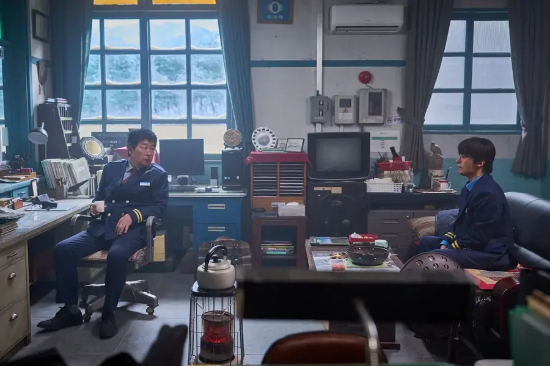
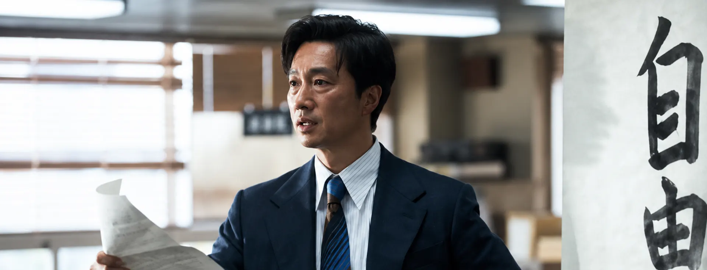
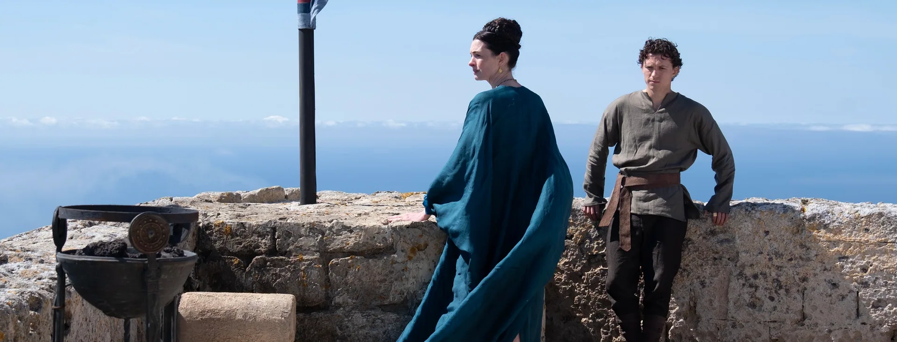
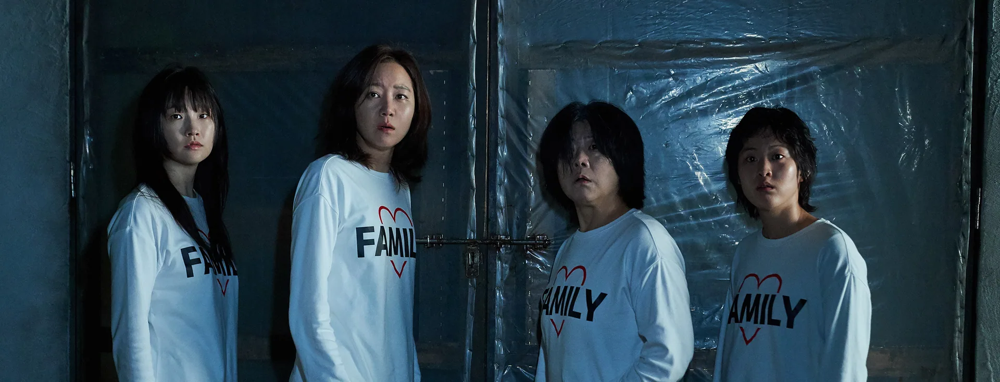
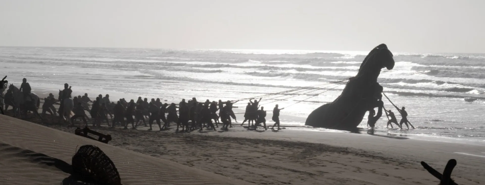
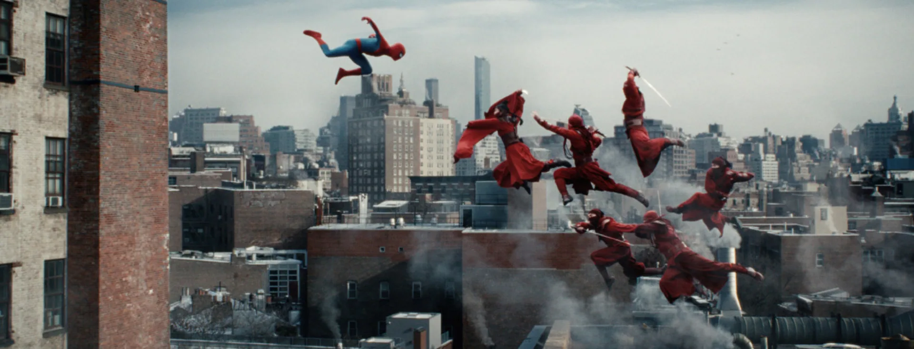

October 2026
2026년 10월호 전체 기사 아카이브

NEWS · 영화제 2026.11.12
매진 행렬에 연대 GV까지, 스크린 안팎 모두 뜨거웠던 서울국제프라이드영화제
제16회 서울국제프라이드영화제(SIPFF) 2026

SPECIAL ② 2026.10.19
진실 기록 넘어 사회 변화로
한국형 ‘임팩트 다큐’ 생태계, 필요하다 — 기록을 넘어 사회적 파급을 만드는 다큐멘터리의 조건.

SPECIAL ① 2026.10.06
새로운 영화·영상 제작 거점으로의 출발
부산기장촬영소를 가다

INTERVIEW ③ 2026.11.23
“이번 영화의 현택, 관객이 완성해 주는 연기”
〈폭설〉 배우 구교환 ①

INTERVIEW ② 2026.10.19
엉뚱하지만 파괴적인
〈부활남: 더 레드〉 정성호 무술감독

INTERVIEW ① 2026.10.06
인간다움과 인간다운 죽음에 대하여
〈구제역에서 살아 돌아온 돼지〉 故 허범욱 감독

CRITIC ④ · WEEKLY REVIEW 2024.10.31
10월 마지막 주 한국영화 개봉작 별점
〈아마존 활명수〉 외 5편

CRITIC ③ · WEEKLY REVIEW 2024.10.17
10월 셋째 주 한국영화 개봉작 별점
〈보통의 가족〉 외 5편

CRITIC ② · YES or NO 2026.10.19
낙원 없이 살아가는 법
〈실낙원〉 찬반 비평 대담

CRITIC ① 2026.10.06
미옥과 호석의 내일을 위한 시간
〈가능한 사랑〉 이창동 감독 신작 비평

GLOBAL 2026.10.19
도시 전체와 호흡하는 축제로
커뮤니티비프와 동네방네비프

GLOBAL ENG 2026.10.19
A Festival in Step with an Entire City
Community BIFF and BIFF Everywhere

KOFIC STORY 2026.10.19
창작자, 어떤 판 위에서 놀게 할 것인가
2026 KOFIC AI 쇼케이스

BOX OFFICE 2026.11.03
10월 5주차 위클리 박스오피스
〈극장판 치이카와〉 1위 수성, 신작 가세한 주간 극장가 동향

BOX OFFICE 2026.10.27
10월 4주차 위클리 박스오피스
10월 4주차 흥행 TOP 10 및 한국영화 관객 점유율 리포트

BOX OFFICE 2026.10.20
10월 3주차 위클리 박스오피스
10월 3주차 흥행 TOP 10 및 한국영화 관객 점유율 리포트

BOX OFFICE 2026.10.13
10월 2주차 위클리 박스오피스
10월 2주차 흥행 TOP 10 및 한국영화 관객 점유율 리포트

BOX OFFICE 2026.10.07
10월 1주차 위클리 박스오피스
10월 1주차 흥행 TOP 10 및 한국영화 관객 점유율 리포트

PRODUCTION 2026.10.13
9월 개봉작 살펴보기
2026. 9. 한국영화 제작상황판 (23편 총정리)

SPECIAL ② 2026.09.21
넥스트 디렉터스, 어떻게 지원할까?
해외 신인 감독 육성 정책 비교 — 글로벌 영상산업 주도권 쥘 차세대 신인 감독 육성의 필요성

SPECIAL ① 2026.09.07
해외 선판매, 보다 진화하려면?
달라진 한국영화의 수익 설계 — 〈군체〉 → 〈호프〉…구원투수를 넘어 수익 ‘중심축’ 된 해외 선판매

INTERVIEW ② 2026.09.21
그날의 진실을 찾아 나서다
〈암살자(들)〉 허진호 감독 — 장르적 장치로 속도감을 낸 미스터리 추적극, 〈암살자(들)〉

INTERVIEW ① 2026.09.21
지금이 더 어른이 필요한 시대
〈인턴〉 제작사 앤솔로지스튜디오 최재원 총괄 프로듀서 — 어른이 필요한 시대, 한국 사회의 정서에 맞춰 재탄생한 〈인턴〉

CRITIC ② · YES or NO 2026.09.21
돈이 더 이상 쾌락을 주지 않는
〈타짜: 벨제붑의 노래〉 — 박동수 평론가 “돈을 대하는 감각 달라져… 사라진 뚜렷한 욕망과 말맛”

CRITIC ① 2026.09.07
외로움의 섬세한 시각화
〈아가미〉 — 섬세한 물의 이미지로 피어난 세 인물의 지독한 외로움

GLOBAL 2026.09.07
그 영화가 더 좋다고?
글로벌 평점 플랫폼으로 보는 한국영화 — 흥행 순위와 다른 글로벌 평점…해외선 작가주의·사회 비판 영화 집중

GLOBAL ENG 2026.09.07
You Think That Movie Is Better?
Korean Films Through the Lens of Global Rating Platforms — Global ratings diverge from box-office rankings, with overseas audiences favoring auteur-driven and socially critical films

KOFIC STORY 2026.09.21
함께 그리는 영화와 영상의 내일
정책과 산업, 예술의 글로벌 테이블, 뤼미에르 서밋 — 한국-프랑스 주재 최초의 글로벌 영화·영상 정상회의 ‘뤼미에르 서밋’

BOX OFFICE 2026.09.29
9월 4주차 위클리 박스오피스
한국영화 신작 나란히 1·2위, 〈오디세이〉 독주 끝내고 판도 바꾼 9월 4주차 극장가
BOX OFFICE 2026.09.22
9월 3주차 위클리 박스오피스
크리스토퍼 놀란 대작 6주 연속 정상, 신작들 진입한 9월 3주차 극장가

BOX OFFICE 2026.09.15
9월 2주차 위클리 박스오피스
크리스토퍼 놀란 대작 5주 연속 정상, 신작들 가세한 9월 2주차 극장가

BOX OFFICE 2026.09.08
9월 1주차 위클리 박스오피스
크리스토퍼 놀란 대작 4주 연속 정상·천만 돌파, 신작들 진입한 9월 1주차 극장가

PRODUCTION 2026.09.11
8월 개봉작 살펴보기
2026. 8. 한국영화 제작상황판 (9월 10일 기준)

SPECIAL ② 2026.08.24
더 천천히, 더 정교하게 가자
한국 독립예술영화 생애주기 확장을 위해 — 위기의 한국 독립예술영화, 장기 상영 불씨 살린 ‘슬로우시네마’

SPECIAL ① 2026.08.10
세로 혁명, 더 뜨거워진다
숏드와 한국영화, 공존할까? — 영상산업의 메인스트림으로 진입하며 새로운 분기점을 맞이한 ‘숏드’

INTERVIEW 2026.08.24
“한계가 있어도 찍고 싶다”
〈선희이모〉 위은경·손광민 감독, 〈월남보살〉 김근호 감독 — 〈선희이모〉 위은경·손광민 감독 “관객과 호흡하며 단편 상영 공간이 확대되길”

CRITIC ② · YES or NO 2026.08.24
서툰 사람들의 죽이는 이야기
〈경주기행〉 — 김세윤 작가 “자기만의 색깔, 새로운 형태로 시도한 반가운 복수극”

CRITIC ① 2026.08.10
내일을 훔쳐보는 몽상가들
〈리틀 드리머즈〉 — 요행을 좇는 청년과 꿈을 잃은 소녀가 연결되는 기묘한 여정

GLOBAL ② 2026.08.24
시상식과 박스오피스를 동시에 노린다
네온의 K-무비 글로벌 전략 — 〈기생충〉에서 〈호프〉와 〈앨리〉로… 네온이 선택한 한국영화의 경쟁력

GLOBAL ENG 2026.08.24
Aiming for Both Awards and Box Office Success
NEON’s Global Strategy for K-Movies — From Parasiteto Hopeand Ally…The competitive edge of Korean films chosen by NEON

GLOBAL ① 2026.08.10
동남아권 영화의 정체성에 대한 탐구
2026 말레이시아국제영화제 탐방기 — 아세안영화의 허브를 향해… 9회 말레이시아국제영화제 탐방

GLOBAL ENG 2026.08.10
Exploring the Identity of Southeast Asian Cinema
A Visit to the 2026 Malaysia International Film Festival — Toward an ASEAN Cinema Hub: A Visit to the 9th Malaysia International Film Festival

KOFIC STORY 2026.08.24
아시아의 약진과 자국영화의 부상
2025년 세계 영화산업 결산 — 고가격·저빈도 관람 구조 고착화, 새로운 전환기 맞은 세계 영화시장
BOX OFFICE 2026.09.01
8월 4주차 위클리 박스오피스
크리스토퍼 놀란 대작 3주 연속 정상, 가족 신작들 진입한 8월 4주차 극장가

BOX OFFICE 2026.08.25
8월 3주차 위클리 박스오피스
크리스토퍼 놀란 신작 2주 연속 정상, 공포 신작 진입한 8월 3주차 극장가
BOX OFFICE 2026.08.19
8월 2주차 위클리 박스오피스
크리스토퍼 놀란 신작 정상 등극, 신작들로 순위 변동 나타난 8월 2주차 극장가

BOX OFFICE 2026.08.11
8월 1주차 위클리 박스오피스
대형 신작 가세로 상위권 지각변동, 흥행세 이어간 8월 1주차 극장가

BOX OFFICE 2026.08.04
7월 5주차 위클리 박스오피스
할리우드 대작 귀환으로 주도권 재편된 7월 5주차 극장가
PRODUCTION 2026.08.11
7월 개봉작 살펴보기
2026. 7. 한국영화 제작상황판 (8월 10일 기준)